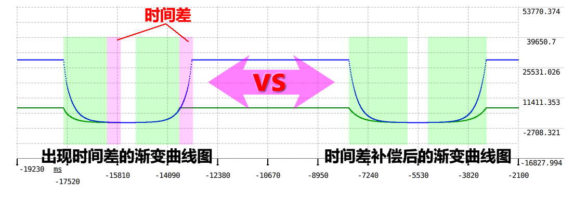
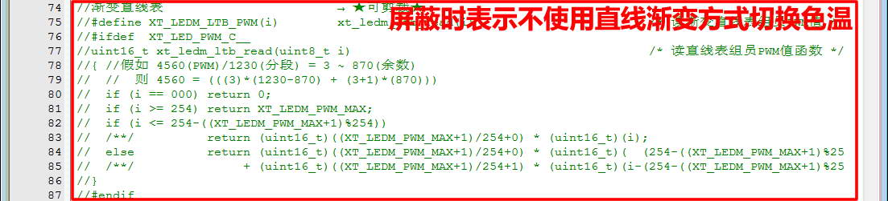

一、构架
1、功能简介
单/双色灯调光服务模块是灯光控制系统中一个核心模块，主要为 开关灯、渐变调光、色温切换 三大功能。具体功能包括：指定色温切换、固定色温切换、曲线调光（查表法）、直线调光、手控调光、紧急关断（过流保护）、前置联动调光（交流斩波占空比联动调光）、控制锁定（特殊用途）、掉电参数保存。其中调色（2700~6500K，精度：100K）、调光控制都可以任意设置亮度（1%~100%，精度：0.1%）、渐变时间（0~100秒，精度：0.1秒，包括全程渐变时间【相当于渐变速率】和行程渐变时间，渐变行程可实现 10ms 级别高精度的时间控制），以及 PWM 输出支持错峰控制（由具体硬件驱动来支持，后期还会加入低亮度时使用 PFM 来调光），从而减小对电源冲击。补充：关于某些异常情况需要亮灯（如：发生故障时亮灯）等这类操作或者设置属于应用业务范畴，本服务模块不会增加此类功能支持！
2、模块架构
备注：由于调光过程的每步操作在中断中都会较大的运算量，所以xt_led_pwm_isr_loop()所在中断的优先级要设置较低，避免影响其它中断的实时性！
3、模块特性
3.1、亮度-电流-PWM 关系图：
从网上资料及实测得这一结论：亮度、电流、PWM占空比 这三者的两两关系都是接近直线的线性关系。也就是说，控制 PWM 输出的占空比，就是控制亮度的百分比。下面的左图是亮度与电流的关系图，右图是实测出的 PWM 占空比与电流关系图：
3.2、曲线公式与渐变曲线图：
调光渐变曲线的目的只是让人眼在调光过程中感觉到舒适和平滑，但它并不是感官或实际亮度的均匀渐变！那为什么要曲线调光？那是因为我们人眼有一个生理特征：对弱光敏感度高，对强光敏感度低。生活中有一现象可以说明这个生理特征，当使用强光照射我们眼睛时，强光影像可以停留十多秒以上；而当弱光照射眼睛时，因为一般亮度的影像在人脑中只会停留几十到几百毫秒左右，所以感觉不出残留。正是这一生理特征会造成在低亮度调光时，我们很容易察觉亮度是梯级性的变化，也就是平常说的亮度“抖动”（注：出现“抖动”现象还与电路性能有关）。也正是这一生理特征，我们观察时发现渐亮容易抖动而渐暗较少抖动的原因。下图是常用的调光曲线和公式，图中的“3”代表曲线的曲度，如果改大则曲线就会越曲，反之曲线越直。本模块参照 DALI 标准将曲线一共分 254 等级（分段），调光时程序会将每一小段再进行细分，使调光曲线具有更高精确度的变化，具体细节可观察下图：
3.3、分段内细分的渐变表现：
本模块渐变节拍一般定义为 2 毫秒，假如渐变时间为 1 秒，PWM 值由 0 ~ 500 变化，则渐变总节拍数为 500，渐变过程就是每节拍 +1 个 PWM 值。但实际上往往不能整除，PWM 输出值必定要整数，本模块采用的算法：假如 PWM 值由 0 ~ 1234 变化，渐变总节拍数为 500，则 1234(PWM值)÷500(节拍) = 2 …… 234(余数)，那么 1234 = ((2)x(500-234)) + ((2+1)x(234))，即：前段 (500-234) 节拍中每节拍 +2 个 PWM 值，后段 (234) 节拍中每节拍 +3 个 PWM 值。下图是某个渐变动作的曲线图，可看出其中某一分段变化的特性：
3.4、曲线渐变方式切换色温：
关于曲线渐变方式切换色温，大多数情况下色温渐变过程明显，让人感觉色温是柔软地过渡，但有一缺点：就是切换过程中亮度会出现“亮-暗-亮”的波动过程，特别是纯冷色和纯暖色相互切换时最为明显。下图中间部分是纯冷色和纯暖色切换曲线图，在曲线交叉点就是切换过程中最暗时刻：
3.5、直线渐变方式切换色温：
关于直线渐变方式切换色温，由于两路直线调光叠加的总亮度变化平稳，加上低亮度渐亮时会有“抖动/突变”的影响，反而造成色温切换过程感觉不明显（感觉一个不留神就完成了切换）。如果切换色温同时设置亮度，那么亮度渐变的效果表现更加生硬（突变明显）。下图中间部分是纯冷色和纯暖色相互切换直线图，可以看出两路叠加总亮度是不变的：
3.6、冷暖色渐变时间差补偿：
当调光时选择渐变速率而不是渐变时间，除了纯冷色、纯暖色、纯中性色外，两路色渐变的最终时长必然不一样，在渐变后期更多表现为色温的变化而不是亮度的变化！为了解决这一问题，需要对短的那一路增加渐变时间，使它们以相同的时间完成渐变，从而表现出更好的渐变效果。下面的左图是以相同渐变速率而出现时间差的渐变曲线图，右图则是通过时间差补偿后的渐变曲线图（效果等同相同渐变时间）：

3.7、LED 手控调光方式选择：
因为调光目标值须是 ‰（千分比）整数，而渐变曲线是过程值会出现小数，不适合用来进行步进式的调光。所以本模块提供两种的手控调光方式选择：手控直线调光和手控类曲线调光。其中手控类曲线调光效果会更好一些，它对低亮度有着较高的精确度调节。下图是手控直线调光和手控类曲线调光的对比图：
3.8、PWM 最小值限制选择：
由于电路和人眼特性的影响，大多数情况下在低亮度渐变或多或少有抖动现象，本模块提供可以设置跳过最低亮度渐变的驱动选择（在驱动层实现），在一定程度上减少低亮度抖动现象。下图是没加 PWM 最小值限制和增加 PWM 最小值限制的对比图：
3.9、PWM 输出的错峰控制：
两路色温总是会有一部分高电平重叠时间，在这重叠的时间里，对供电电源来说，相当于两路 100%输出，会对供电电源有较大的冲击，可能会影响供电电源的使用寿命。解决方法很简单，只需把高电平输出错开即可，具体做法：将其中一路 PWM 电平取反，再用 PWM最大值 - PWM输出值（在驱动层实现）。下图是两路 PWM 常规输出与错峰输出的对比图：
3.10、PWM-PFM 两种调制：
PWM（脉冲宽度调制）和 PFM（脉冲频率调制/定宽调频）是两大类的输出量转换器架构，常用于灯光控制、电机控制、开关电源。备注：还有 PSM（脉冲跨周期调制），方式：频率和脉宽都不变，脉冲时有时无的方式进行调制。PWM 在中等和重负载时效率高，但在轻负载时效率低；而 PFM 在轻负载的情况下效率则是很高。关于 PWM 频率的影响：1）频率低录像会频闪和电源元件会啸叫；2）低亮度时频率高难过 EMC 传导；3）目前市面上大多数调光频率都是 10~16KHz 居多。下图是 PWM 与 PFM 的对比图：
3.11、LED 恒压与恒流驱动：
LED 驱动方案一般分为两种：恒压驱动和恒流驱动。恒压驱动：输出的电压是固定的，而输出的电流却随着负载的增减而变化。恒流驱动：输出的电流是恒定的，而输出的电压却随着负载阻值的大小不同在一定范围内变化。当使用 PWM 来控制这两种驱动输出低亮度时，都会有抖动现象（与人眼生理特征也有关）：PWM 直驱 MOS管（恒压驱动）出现的抖动基本是 PWM 的分辩率太低引起；而 PWM 转恒流的芯片本身在低亮时的线性较差，容易出现抖动。LED 驱动芯片有：DIO8280、FP7183、Hi7001 等。下图是恒压驱动和恒流驱动常见电路：
4、DALI标准
4.1、DALI 调光对数曲线：
4.2、DALI 常规参数配置：
{kind=link}
{kind=link}
5、环境要求
| 环境 | 要求 |
|---|---|
| 软件环境 | 实时操作系统 或 裸机环境 均可 |
| 硬件环境 | 增强型 C51 及更高性能 MCU |
二、移植
1、添加源文件
将模块源文件、文件包含路径添加到工程，示例：
2、加入引脚定义
在工程头文件《board.h》统一加入引脚定义，示例：
// LED调色调光模块演示++++++++++++++++
// 配置PWM频率等
#define LEDM_TIMX_DIV 1 //定时器的时钟分频
#define LEDM_TIMX_PWM_FRE 1000 //PWM 输出频率
#define LEDM_TIMX_PWM_FREVOL ((72000000 / (LEDM_TIMX_DIV+1) / LEDM_TIMX_PWM_FRE) - 1) //PWM 100%数值(≤0xFFFF)
// 配置PWM定时器
#define LEDM_TIMX TIM3 /* 定时器 */
#define LEDM_TIMX_CLK_ENABLE() __HAL_RCC_TIM3_CLK_ENABLE() /* 定时器时钟使能 //
#define LEDM_TIMX_AFIO_REMAP() __HAL_AFIO_REMAP_TIM3_PARTIAL_1() // 定时器引脚重映射(不用则屏蔽) // //只有 TIM1~5 才有映射 (分:重映射[TIM4~5]、部分和完全重映射TIM1~3)
#define LEDM_TIMX_HANDLER htim3 // 定时器句柄(不用全局句柄则屏蔽//
BSP_EXT TIM_HandleTypeDef htim3; // 定时器句柄(全局变量,按需屏蔽)*/
#define LEDM_TIMX_IRQn TIM3_IRQn /* 定时器中断通道 */
#define LEDM_TIMX_PRE_INT_PRIO 0 /* 定时器抢占中断优先级 */
#define LEDM_TIMX_SUB_INT_PRIO 0 /* 定时器响应中断优先级 */
#define LEDM_TIMX_IRQHandler TIM3_IRQHandler /* 中断向量函数 */
// 配置冷光PWM引脚
#define LEDM_PWMC_CLK_ENABLE() __HAL_RCC_GPIOB_CLK_ENABLE() /* PWMC 管脚时钟使能(不用则屏蔽)*/
#define LEDM_PWMC_GPIO GPIOB /* PWMC 所在端口 */
#define LEDM_PWMC_PIN GPIO_PIN_0 /* PWMC 所在管脚 */
#define LEDM_PWMC_OCMODE TIM_OCMODE_PWM1 /* PWMC 输出极性模式(2则反极性) */ //使用在:非0%,非停止
#define LEDM_PWMC_OCPOLARITY TIM_OCPOLARITY_HIGH /* PWMC 有效占空比输出的电平 // //正向通道
#define LEDM_PWMC_OCIDLESTATE TIM_OCIDLESTATE_RESET // PWMC 空闲时电平(不用则屏蔽) */ //只针对TIM1,其它定时器默认为低电平
#define LEDM_PWMC_CCR CCR3 /* PWMC LEDM_TIMX->LEDM_PWMC_CCR*/ //占空比
#define LEDM_PWMC_TIM_CHANNEL TIM_CHANNEL_3 /* PWMC 所在定时器通道 */
// 配置暖光PWM引脚
#define LEDM_PWMW_CLK_ENABLE() __HAL_RCC_GPIOB_CLK_ENABLE() /* PWMW 管脚时钟使能(不用则屏蔽)*/
#define LEDM_PWMW_GPIO GPIOB /* PWMW 所在端口 */
#define LEDM_PWMW_PIN GPIO_PIN_1 /* PWMW 所在管脚 */
#define LEDM_PWMW_OCMODE TIM_OCMODE_PWM2 /* PWMW 输出极性模式(2则反极性) */ //使用在:非0%,非停止（★★注：使用 TIM_OCMODE_PWM2 是为实现错峰控制★★）
#define LEDM_PWMW_OCPOLARITY TIM_OCPOLARITY_HIGH /* PWMW 有效占空比输出的电平 // //正向通道
#define LEDM_PWMW_OCIDLESTATE TIM_OCIDLESTATE_RESET // PWMW 空闲时电平(不用则屏蔽) */ //只针对TIM1,其它定时器默认为低电平
#define LEDM_PWMW_CCR CCR4 /* PWMW LEDM_TIMX->LEDM_PWMW_CCR*/ //占空比
#define LEDM_PWMW_TIM_CHANNEL TIM_CHANNEL_4 /* PWMW 所在定时器通道 */
3、加入初始函数
在工程硬件初始化函数中加入模块硬件初始化，示例：
int bsp_board_init(void)
{
.
.
#if (XT_APP_LEDPWM_EN == XT_DEF_ENABLED)
xt_led_pwm_chip_init();
#endif
.
.
#if (XT_APP_LEDPWM_EN == XT_DEF_ENABLED)
xt_led_pwm_dev_init();
#endif
}
void rt_init_thread_entry(void* parameter)
{
#if (XT_APP_LEDPWM_EN == XT_DEF_ENABLED)
xt_led_pwm_msg_init();
#endif
.
.
}
补充说明：如果工程有自动初始架构，可以由宏XT_CHIP_INIT_1_TAB_EXPORT(func,desc)、XT_DEV_INIT_2_TAB_EXPORT(func,desc)、XT_MSG_INIT_2_TAB_EXPORT(func,desc)自动调用函数进行初始化！
4、包含头文件
在使用模块的应用程序中加入头文件包含，示例：
#if (XT_APP_LEDPWM_EN == XT_DEF_ENABLED)
#include "xt_led_pwm.h"
#endif
5、配置模块参数
根据实际的使用环境配置模块参数，示例：

补充说明：由于标准模块是不允许用户修改的，所以在应用时请启用头文件映射，在映射头文件修改配置！
6、使能模块开关
在工程头文件《application.h》统一使能模块开关，示例：
#define XT_DEF_DISABLED 0 /* 禁用模块 */
#define XT_DEF_ENABLED 1 /* 使能模块 */
#define XT_APP_DEBUG 20230301 /* 开启演示 */
#define __XT_LED_PWM_REMAP_H
#ifndef XT_APP_LEDPWM_EN
#define XT_APP_LEDPWM_EN XT_DEF_ENABLED /* LED调色调光模块 */
#endif
三、使用
1、应用示例
本示范只是以最简单方式展示模块的基本使用，并非一个应用实例！
#include <stdint.h>
#include "xt_led_pwm.h"
//开关灯与调光控制
xt_led_pwm_set(XT_LEDM_OP_SW, 0, 20); //关灯控制 ，渐变时间为2秒
xt_led_pwm_set(XT_LEDM_OP_SW, 1, 0xFFFF); //开灯控制 ，渐变速率为默认
xt_led_pwm_set(XT_LEDM_OP_SW, 2, 0x7FFF); //开关灯控制 ，渐变时间为默认
xt_led_pwm_set(XT_LEDM_OP_LIGHT, 900, 50); //指定90%亮度，渐变时间为5秒
//模拟按键上下调光
xt_led_pwm_set(XT_LEDM_OP_ADJUST, 1, 0x7FFF); //按键按下时向上调光，渐变时间为默认
xt_led_pwm_set(XT_LEDM_OP_ADJUST, 0, 0x7FFF); //按键松开时结束调光
xt_led_pwm_set(XT_LEDM_OP_ADJUST, 2, 0x7FFF); //按键按下时向下调光，渐变时间为默认
xt_led_pwm_set(XT_LEDM_OP_ADJUST, 0, 0x7FFF); //按键松开时结束调光
//色温切换或指定色温
xt_led_pwm_set(XT_LEDM_OP_MODE_SW, 0x7F, 25); //正常切换色温，渐变时间为2.5秒
xt_led_pwm_set(XT_LEDM_OP_MODE_SW, 0xFF, 25); //强制切换色温，渐变时间为2.5秒
xt_led_pwm_set(XT_LEDM_OP_MODE_SW, XT_LEDM_MODE_COLD, 25); //指定为纯冷色，渐变时间为2.5秒
xt_led_pwm_cct_set(36, 800, 1000); //指定3600K色温，指定80%亮度，渐变时间为100秒
//模拟中断检测到输出过流时
xt_led_pwm_alarm_locked(); //过流保护，可以在中断里调用
xt_led_pwm_alarm_unlock(); //过流保护复位，须由应用调用
xt_led_pwm_set(XT_LEDM_OP_SW, 1, 0x7FFF); //重新开灯控制，须由应用调用
//模拟中断检测到掉电时
xt_led_pwm_st_save_trigger(); //通知调光模块赶紧进行掉电保存数据，在中断里触发
//模拟交流斩波占空比联动调光
xt_led_pwm_pre_dimmer(v); //根据斩波占空比v%大小直接联动调光模块进行调光，可以在中断里控制
//切换调光曲线表
xt_led_pwm_curve_tb_replace(p_tab2); //切换调光曲线表为p_tab2[]，注意曲线固定大小为p_tab2[255]